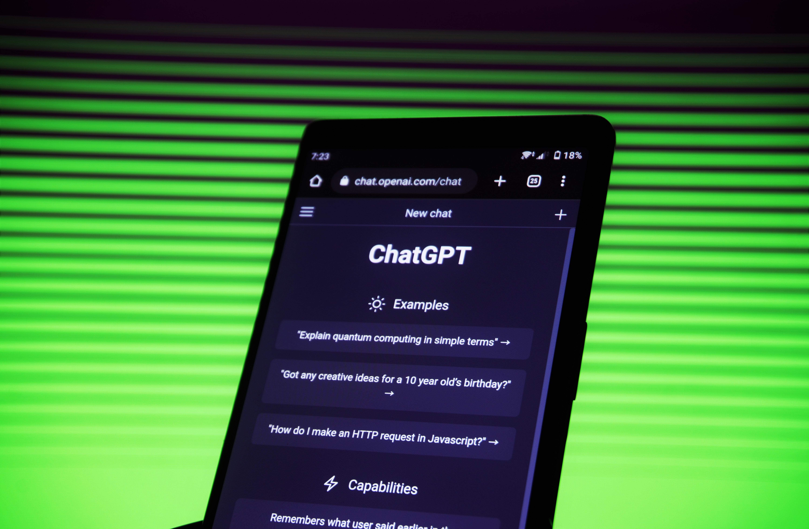

Thank you for participating in our quiz!
Using the buttons in the top right, you can, minimize the windows to the taskbar below, make them full screen, or close them.
Drag the title bar at the top to move the windows or resize them from the bottom right corner.
For more information
Feel free to browse our site. Simply close out of or minimize this window to see all the topics!What are chatbots?
The modern day chatbot is a piece of software that uses natural language understanding and artificial intelligence in order to simulate having a conversation with another human. Usually, a chatbot interacts with users through a text interface. Generative chatbots, which we will be talking about on this website, take human language as input, analyze this information, and output generated human text based on the input text. Chatbots are not actually conscious, so they don’t “understand” what they are saying, but they can output text which we, as humans, can find meaning in and understand.

They can:
- Answer complex questions and converse with users without help from humans
- Do very well on tests like the bar, the medical licensing exam, and a software test given to Amazon job candidates.
- Learn how a specific user typically uses it, and adapt to this. This includes providing user specific recommendations and anticipating user specific needs.
- Provide answers to customer issues for businesses in a helpline-like manner.
They cannot:
- Provide information which is true 100% of the time. AI will sometimes confidently give incorrect information; this phenomenon is known as “hallucination.”
- Understand what they are saying.
- Purposefully come up with novel ideas. Chatbots rely on mimicking what humans have already done. If a chatbot stumbles upon what looks to be a novel idea, it is probably just a combination of other ideas.
Sources:
New Scientist Magazine article "Are Chatbots Really Able to Think Like People?" by Matthew Sparkes
How are chatbots trained?

Chatbots are fed massive datasets. They analyze these datasets to see how human language is typically structured. Specifically, when they analyze question and answer dialogues, they make associations between certain questions and appropriate responses to these questions. AiChat notes that “Chatbots are only as good as the training data they are given. You can’t just launch a chatbot with no data and expect customers to start using it.” Because there are so many possible ways for people to ask the same question and there are so many questions that could be asked to a chatbot, a lot of high quality data is necessary to make a well functioning chatbot. In ideal scenarios, chatbots are fed data from real interactions with humans on the topic of what they are being trained for. For example, if I was training a chatbot to respond to customer service chats for Gustavus Technology Services, I would feed it real text interactions that have happened between clients and employees of Gustavus Technology Services. However, this specificity is usually not possible because of how much data chatbots require. For this reason, many people train their chatbots on open source datasets like The WikiQA Corpus, Yahoo Language Data, and Ubuntu Dialogue Corpus.
ChatGPT in particular is trained using the internet as its database. By analyzing this dataset, the software learned how to predict which letters follow each other based on the context which the chatbot is responding to. For example, if the chatbot has so far output “it’s raining cats and do” and is trying to figure out what should come next, it will draw on its previous experience of encountering this idiom and add “gs” making the full phrase “it’s raining cats and dogs.” It was also trained using Reinforcement Learning from Human Feedback (RLHF). RLHF is the process where humans answer questions which chatbots are asked and chatbots learn to mimic the answers that the humans give. This can help make chatbots well mannered and appropriate.
Sources:
ChatGPT
ChatGPT is the most popular ChatBot at the moment. It was released in November 2022 by OpenAI. It has a set database, meaning it cannot access the internet past a certain point, and cannot keep up with current events. It is good at writing stories, doing math, and even writing code.
Jasper
Jasper is a paid-subscription chatbot that is very similar to ChatGPT. Jasper comes with many templates for writing that can be quite useful, as well as features such as a plagiarism checker and a spell checker.
GoogleBard
Google Bard is a chatbot designed by google that uses its own language model, unlike most other chatbots, which use OpenAI’s GPT languaging models. Google Bard is a great tool for writing help, however it falls short in other categories. It uses up to date information from the internet, however it does not cite its sources.
Bing
The New Bing is a chatbot released to the public in May 2023 by Microsoft. It uses the current internet for its database, meaning it is constantly being updated for current events. It also links back to the sources it uses for its replies. Bing is able to generate images based off information as well. Bing takes a record of your chats, however it is not as intuitive as ChatGPT.
Predictive Text
Predictive text on your phone is like an early version of a chatbot. AI would scan its dataset for what words were often put after the words you type, and predict that was the word you want to say. So… in a way we have all been using chatbots since the dawn of Siri.
Snapchat's MyAI
Snapchat’s MyAI is similar to ChatGPT, however it is limited in its ability to share information. It is good at conversation, however it is accurate less often than other chatbots. If Snapchat has access to your location, so does MyAI, and it can use this to do things like recommend restaurants near you.
Source:
Will they take writing jobs?

It is possible. Some chatbots are able to write cover letters, news articles, and legal briefs. According to Insider magazine, chatbots could take the place of journalists, paralegals, personal financial advisors, and many more roles. However, many people are skeptical of the ability of chatbots to replace jobs. They point to human interaction and human judgements being integral parts of many occupations.
Will they become conscious and take over the world?
In an article on LAMARR Institute for Machine Learning and Artificial Intellegence’s website, Dr. Christian Bauckhage discusses if ChatGPT has consciousness. He notes that ChatGPT constantly insists on it not having feelings or consciousness, but speculates that it was probably programmed to say exactly this. He also says that it was probably designed to deny having consciousness. He then states that if they are conscious, they might be lying to us by saying that they aren’t conscious in order to quell our worries about chatbot consciousness. However, he also says that we shouldn’t attribute consciousness to AIs just because they have the qualities of consciousness, like ability to converse. He does eventually state that chatbots are only mimicking human consciousness, and that they are not conscious themselves. So, you probably don’t need to be concerned about chatbots becoming conscious and taking over the world.
Plagiarism and Education
Chris Westfall has written quite the eye catching news article title. “Educators Battle Plagiarism As 89% Of Students Admit To Using OpenAI’s ChatGPT For Homework”. This jarring statistic leads to a concerning question: how will chatbots affect the education of the next generation of children? The article proposes a metaphor which compares how we learn to how we physically transport ourselves. In this metaphor, using cars, planes, and electric scooters are equated to using ChatGPT to do our homework while walking and running are equated to doing our homework ourselves. It describes that an active lifestyle is more healthy for us, in both of these scenarios. If people don’t do their own educational tasks, their skill sets may suffer. However, there is a reason to have optimism still: chatbots may press us to start getting better at asking the right questions.
Sources:
©HTML5-Templates.com